[1] 0.001291758Medical Statistics
Important Probability Distributions
Boncho Ku, Ph.D. in Statistics ![]()
Korea Institute of Oriental Medicine (KIOM)
Korea Institute of Oriental Medicine
Important Discrete Distribution
Bernoulli Trial
Definition
A random experiment in which there are only two possible outcomes
Example
- Tossing a coin: Head (H) or Tail (T)
- Take an exam: Success (S) or Failure (F)
- True (T) or False (F)
Let \(X:\{S,F\} \rightarrow \{0,1\}\), that is
\[X = \begin{cases} 1~~~~~\mathrm{if~the~outcome~is~S}\\ 0~~~~~\mathrm{if~the~outcome~is~F}\\ \end{cases}\]
Let \(p\) be the probability of success, then the p.m.f of \(X\) is
\[ f_X(x) = p^x(1-p)^{1-x}, x = \{0, 1\} \]
\[ E(X) = p, ~~ Var(X) = \sigma^2 = p(1-p) \]
Binomial Distribution
The Binomial distribution has three defining properties:
Important
- Bernoulli trials are conducted \(n\) times
- The trials are independent
- The probability of success \(p\) does not change between trials
Definition
If \(X\) counts the number of successes in the \(n\) independent Bernoulli trials, we say that \(X\) has a binomial distribution with the p.m.f
\[ P(X = x) = f_X(x) = \binom{n}{k} p^x (1-p)^{n-x}, x=\{0, 1, \ldots, n\} \]
We write
\[ X \sim \mathrm{binom}(\mathrm{size} = n,~~\mathrm{prob} = p) \]
Binomial Distribution
Important
The total number of successes is identical to the sum of \(n\) Bernoulli trials.
\[\sum_{x=0}^{n}\binom{n}{x} p^x (1-p)^{n-x} = [p + (1-p)]^{n} = 1\]
\[\begin{aligned} \mu & = \sum_{x=0}^{n}x\binom{n}{x}p^{x}(1-p)^{n-x} \\ & = \sum_{x=1}^{n}x\frac{n!}{x!(n-x)!}p^{x}(1-p)^{n-x} \\ & = n\cdot p\sum_{x=1}^{n}\frac{(n-1)!}{(x-1)!(n-x)!}p^{x-1}(1-p)^{n-x} \\ & = n\cdot p\sum_{x-1=0}^{n-1}\binom{n-1}{x-1}p^{x-1}(1-p)^{(n-1)-(x-1)} \\ & = np \end{aligned}\]
\[\begin{aligned} \sigma^2 &= E[X^2] - [E(X)]^2 \\ &= \sum_{x=0}^{n}x^2\binom{n}{x}p^{x}(1-p)^{n-x} - (np)^2 \\ &= \sum_{x=1}^{n}x^2\binom{n}{x}p^{x}(1-p)^{n-x} - (np)^2 \\ &= \sum_{x=1}^{n}x\cdot x \frac{n(n-1)!}{x(x-1)!(n-x)!}p^{x}(1-p)^{n-x} -(np)^2 \\ &= np\sum_{x-1=0}^{n-1}x\binom{n-1}{x-1}p^{x-1}(1-p)^{(n-1)-(x-1)} - (np)^2 \end{aligned}\]
Continued from (1)
Let \(y=x-1\) and \(m=n-1\), then
\[\begin{aligned} \sigma^2 &= np\sum_{y=0}^{n-1}(y+1)\binom{m}{y}p^{x-1}(1-p)^{m-y} -(np)^2\\ &= np\{(n-1)p + 1\} - (np)^2 = (np)^2 + np(1-p) - (np)^2 \\ &= np(1-p) \end{aligned}\]
Let \(X_{i} \sim Bernoulli(p)\) then \(Y=\sum_{i=1}^{n}X_i \sim \mathrm{binom}(n, p)\). Therefore,
\[\begin{aligned} \mu_{Y} &= E(Y) = E\left(\sum_{i=1}^{n}X_{i}\right) = \sum_{i=1}^{n}E(X_i) = \sum_{i=1}^{n}p = np \\ \sigma_{Y}^{2} &= Var(Y)=Var\left(\sum_{i=1}^{n}X_{i}\right) = \sum_{i=1}^{n}Var(X_i) \\ &= \sum_{i=1}^{n}p(1-p) = np(1-p)~\because~X_{i} \perp X_{j} \end{aligned}\]
Binomial Distribution
Example
Roll 12 dice simultaneously, and let \(X\) denote the number of s appear. We wish to find the probability of getting seven, eight, or nine s.
Let \(S\) be an event that we get a on one roll. Then \(P(S)=1/6\) and the rolls constitute Bernoulli trials; \(X \sim \mathrm{binom}(\mathrm{size}=12, \mathrm{prob} = 1/6)\) and we are asking to find \(P(7\leq X\leq 9)\). That is,
\[P(7\leq X\leq 9) = \sum_{x=7}^{9}\binom{12}{x}\left(\frac{1}{6}\right)^x\left(\frac{5}{6}\right)^{12-x}\]
Alternative
\[P(7\leq X\leq 9) = P(X \leq 9) - P(X \leq 6) = F_X(9) - F_X(6)\]
where \(F_X(x)\) is the CDF of \(X\).
Binomial Distribution
Example (CDF)
Toss a coin 3 times and let \(X\) be the number of Heads observed. Then
\[X \sim \mathrm{binom}(\mathrm{size} = 3, \mathrm{prob} = 1/2)\]
The PMF:
| \(x=\#~\mathrm{of~Heads}\) | 0 | 1 | 2 | 3 |
|---|---|---|---|---|
| \(f(x)=P(X=x)\) | 1/8 | 3/8 | 3/8 | 1/8 |
\[F_{X}(x) = P(X \leq x) = \begin{cases} 0, ~~~~~~~~~~~~~~~~~~~~~~x < 0\\ \frac{1}{8},~~~~~~~~~~~~~~~~~~~~~ 0\leq x < 1\\ \frac{1}{8} + \frac{3}{8} = \frac{4}{8},~~~~~ 1\leq x < 2\\ \frac{4}{8} + \frac{3}{8} = \frac{7}{8},~~~~~ 2\leq x < 3\\ 1 ~~~~~~~~~~~~~~~~~~~~~~~~x \geq 3\\ \end{cases}\]
n <- 3; p <- 0.5
x <- -1:(n+1)
y <- pbinom(x, size = n, p = p)
plot(x, y, type = "n",
xlab = "number of successes",
ylab = "cumulative probability")
abline(h=1, lty=2, col = "darkgray")
abline(h=0, lty=2, col = "darkgray")
points(x[2:5], y[2:5], pch=16, cex = 2)
points(x[2:5], y[1:4], pch=21, cex = 2)
segments(
x0 = c(-2, 0, 1, 2, 3),
x1 = c( 0, 1, 2, 3, 5),
y0 = c(y[1], y[2], y[3], y[4], y[5]),
y1 = c(y[1], y[2], y[3], y[4], y[5])
)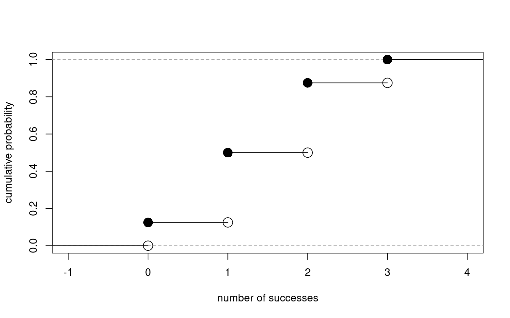
Hypergeometric Distribution
Example
Suppose that an urn contains 7 white balls and 5 black balls. Let our random experiment be to randomly select 4 balls, without replacement, from the urn. Then the probability of observing 3 white balls(and thus 1 black ball) is
\[P(3W, 1B) = \frac{\binom{7}{3}\binom{5}{1}}{\binom{12}{4}}\]
- Sample 4 times (\(=K\)) without replacement \(\rightarrow\) a sample from POPULATION
- From where?? \(\rightarrow\) an urn with 7 white balls (\(=M\)) and 5 black balls (\(=N\))
Definition
Let \(X\) be the number of success in \(K\) samples obtained from a total of \(N\) successes and \(M\) failures, the PMF of \(X\) is
\[P(X=x) = f_{X}(x) = \frac{\binom{M}{x}\binom{N}{K-x}}{\binom{M+N}{K}}, ~~~0\leq x \leq M,~0\leq K-x \leq N\]
Hypergeometric Distribution
Expectation
\[\mu_X=E(X)=K\frac{M}{M+N} \]
Variance
\[\sigma_{X}^2=Var(X)=K\frac{MN}{(M+N)^2}\frac{M+N-K}{M+N-1} \]
Example
Suppose that a city with \(N\) women and \(M\) men.
- \(X\): the number of women infected with the disease
- \(Y\): the number ofmen infected with the disease
Our goal is to estimate the probability that a person infected with the disease is women. Let \(p_X\) and \(p_Y\) denote probabilities of infection. Assume that \(p = p_X = p_Y\)
| Women | Men | Total | |
|---|---|---|---|
| Infection: Yes | \(X\) | \(Y\) | \(X+Y\) |
| Infection: No | \(N-X\) | \(M-Y\) | \((N+M)-(X+Y)\) |
| Total | \(N\) | \(M\) | \(N+M\) |
Hypergeometric Distribution
Example (continued)
Then \(X\sim \mathrm{binom}(\mathrm{size}=N, \mathrm{prob}=p)\), \(Y\sim \mathrm{binom}(\mathrm{size}=M, \mathrm{prob}=p)\). Thus,
\[(X+Y) \sim \mathrm{binom}(\mathrm{size}=N+M, \mathrm{prob} = p)~~\because X\perp Y\]
Our purpose is to find
\[P(X=x|X+Y) = \frac{P(X+Y|X=x)P(X=x)}{P(X+Y)}~~\because \mathrm{Bayes~Theorem} \] Let \(X+Y=K\)
\[\begin{aligned} P(X=x|X+Y) &= \frac{P(Y=K-X|X=x)P(X=x)}{P(X+Y=K)} \\ &= \frac{P(Y=K-X)P(X=x)}{P(X+Y=K)}~~\because X\perp Y \\ &= \frac{\binom{M}{K-X}p^{K-X}(1-p)^{M-K+X} \binom{N}{X}p^X(1-p)^{N-X}}{\binom{N+M}{K} p^K(1-p)^{N+M-K}} \\ &= \frac{\binom{M}{K-X}\binom{N}{X}}{\binom{N+M}{K}} \sim \mathrm{Hyper}(M, N, K) \end{aligned}\]
Hypergeometric Distribution
Relationship to Binomial Distribution
The conditional distribution of \(X\) given \(X+Y=K\) is identical to hypergeometric distribution.
When \(N \rightarrow \infty\), the hypergeometric distribution converges to the binomial distribution.
Important
Binomial distribution \(\rightarrow\) with replacement
Hypergeometric distribution \(\rightarrow\) without replacement
Poisson Distribution
Motivation
How do we measure the probability of a given number of events occurring in a fixed interval of time or space?
Examples
- Call center: number of calls per hour within a day
- Traffic accident: number of traffic accidents during 7:00 AM to 10:00 AM per day
- Number of customers arriving in a bank between 9:00 AM and 11:00 AM
Assumption
- The events occurs independently (independence)
- The events occurs with a known constant mean rate (consistency)
- The probability of two events occurring in a very short time and very small space is 0 (non-clustering)
Poisson Distribution
Definition
Let \(\lambda\) (\(\lambda > 0\)) be the average number of events in the time interval \([0,1]\). Let the discrete random variable \(X\) count the number of events occuring in the interval.
\[f_X(x) = P(X=x) = \frac{\lambda^x\exp(-\lambda)}{x!}, ~~~x = 0,1,2,\ldots\]
We write \(X \sim \mathrm{pois}(\mathrm{lambda} = \lambda)\)
If \(X\) counts the number of events in the interval \([0, t]\) and \(\lambda\) is the average number of occurance in unit time,
\[f_X(x) = P(X=x) = \frac{(\lambda t)^x\exp(-\lambda t)}{x!}, ~~~x = 0,1,2,\ldots\]
Poisson Distribution
\[E(X) = \sum_{x=0}^{\infty}x \frac{\lambda^x\exp(-\lambda)}{x!} = \sum_{x=0}^{\infty} \lambda \frac{\lambda^{(x-1)}\exp(-\lambda)}{(x-1)!} = \lambda\]
\[Var(X) = \sum_{x=0}^{\infty}x^2 \frac{\lambda^x\exp(-\lambda)}{x!} = \sum_{x=0}^{\infty} \lambda^2 \frac{\lambda^{(x-2)}\exp(-\lambda)}{(x-2)!} = \lambda^2\]
Shapes of Poisson Distribution according to \(\lambda\)
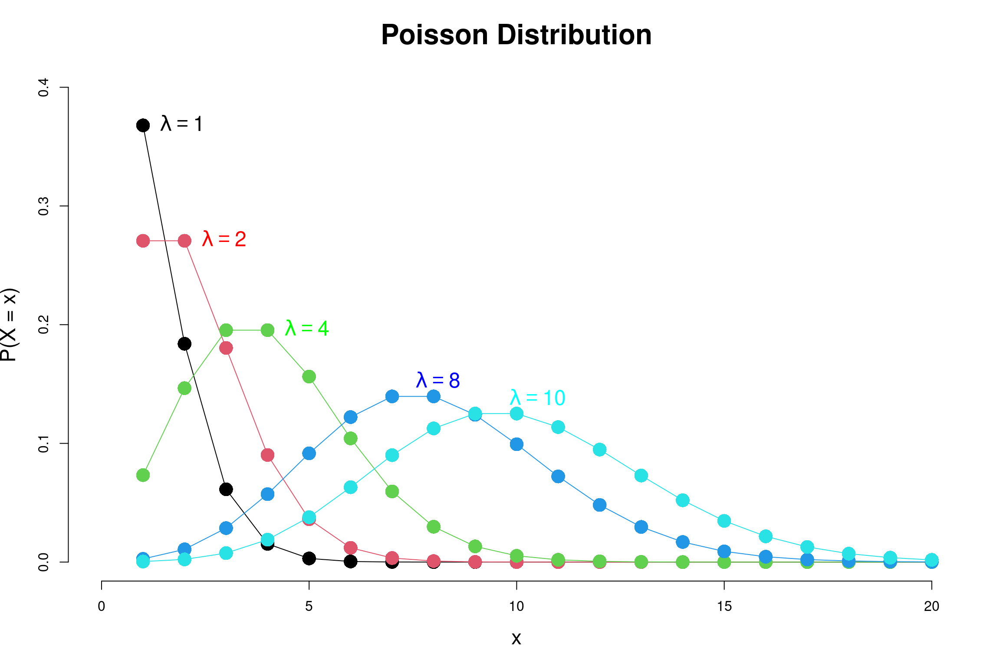
Poisson Distribution
Example 1
On the average, 5 cars arrive at a particular car wash every hour. Let \(X\) count the number of cars that arrive from 10 AM to 11 AM. What is the probability that no car arrives during this period?
Example 2
Suppose the car wash above is in operation from 8 AM to 6 PM, and we let \(Y\) be the number of customers that appear in this period. What is the probability that there are between 48 and 50 customers, inclusive?
Since \(X \sim \mathrm{pois}(\lambda = 5)\), the probability that no car arrives is
\[P(X = 0) = \frac{5^0\exp(-5)}{0!} = \exp(-5) \approx 0.0067\]
scripts for the solution
The average car arrivals during 8 AM to 6 PM is \(\lambda'=5\times10=50\), \(Y\sim \mathrm{pois}(\lambda = \lambda'=50)\). The probability between 48 to 50 customers:
\[ P(48 \leq Y \leq 50) = \sum_{y=0}^{50}\frac{50^{y}\exp(-50)}{y!} - \sum_{y=0}^{47}\frac{50^{y}\exp(-50)}{y!} \approx 0.168 \]
scripts for the solution
Poisson Distribution
Relationship to Binomial Distribution
Suppose \(X\) and \(Y\) are Poisson random variables: \(X\sim \mathrm{pois}(\lambda_1)\), \(Y\sim \mathrm{pois}(\lambda_2)\) and \(X\) and \(Y\) are independent, then \((X+Y)\sim \mathrm{pois}(\lambda_{1} + \lambda_{2})\). The conditional distribution of \(X\) given with \((X+Y) = N\) is identical to the binomial distribution with size of \(N\) and probability of \(p=\lambda_1/(\lambda_1 + \lambda_2)\).
Proof
By using Bayes Theorem,
\[ P(X|X+Y = N) = \frac{P(X+Y=N|X=x)P(X=x)}{P(X+Y = N)} \]
Since \(X \perp Y\), \(Y=X-N\),
\[ P(X|X+Y = N) = \frac{P(Y=N-X)P(X=x)}{P(X+Y = N)}=\frac{\frac{\exp(-\lambda_2)\lambda_2^{N-x}}{(N-x)!}\frac{\exp{(-\lambda_1)}\lambda_1^{x}}{x!}}{\frac{\exp[-(\lambda_1+\lambda_2)](\lambda_1+\lambda_2)^N}{N!}} \]
Poisson Distribution
Proof (continued)
\[\begin{aligned} P(X|X+Y = N) &= \frac{N!}{x!(N-x)!}\frac{\exp{[-(\lambda_1+\lambda_2)]}\lambda_1^x\lambda_2^{N-x}}{\exp{[-(\lambda_1+\lambda_2)]}(\lambda_1+\lambda_2)^N} \\ &= \binom{N}{x}\frac{\lambda_1^x\lambda_2^{N-x}}{(\lambda_1 + \lambda_2)^N} = \binom{N}{x}\frac{\lambda_1^x\lambda_2^{N-x}}{(\lambda_1 + \lambda_2)^x(\lambda_1 + \lambda_2)^{N-x}} \\ &= \binom{N}{x}\left(\frac{\lambda_1}{\lambda_1+\lambda_2}\right)^x\left(1-\frac{\lambda_1}{\lambda_1+\lambda_2}\right)^{N-x} \\ &= \mathrm{binom}\left(\mathrm{size}=N, \mathrm{prob}=\frac{\lambda_1}{\lambda_1+\lambda_2}\right) \end{aligned}\]
Important
The conditional distribution of \(X\) given \(X+Y\) is identical to the binomial distribution, where \(X\sim \mathrm{pois}(\lambda_1)\) and \(Y\sim \mathrm{pois}(\lambda_2)\)
(Check) The binomial distribution is converge to the poisson distribution when \(N\rightarrow \infty\)
Important Continuous Distributions
Uniform Distribution
Definition
When a random variable \(X\) with identical probability over every interval on \([a,b]\), it is called a uniform distribution
We write \(X \sim U(a, b)\) or \(X\sim \mathrm{unif}(\mathrm{min} = a, \mathrm{max}=b)\)
\[f_X(x) = \begin{cases} \frac{1}{b-a},~~ a\leq x \leq b \\ 0, ~~~~~~~ \mathrm{otherwise} \end{cases}\]
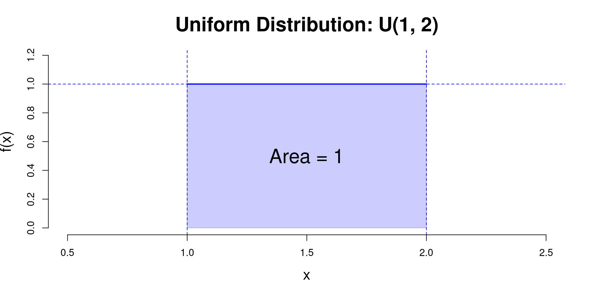
\[F_X(x) = \begin{cases} 0, ~~~~~~~ x < a\\ \frac{x-a}{b-a}, ~~ a\leq x \leq b\\ 1, ~~~~~~~ x > b \end{cases}\]
\[\begin{aligned} \mu_X = E(X) &= \int_{-\infty}^{\infty} x f_X(x) dx \\ &= \int_{a}^{b} x \frac{1}{b-a} dx \\ &= \frac{1}{b-a}\frac{x^2}{2} \bigg|_{x=a}^{b} \\ &= \frac{b+a}{2} \end{aligned}\]
\[\begin{aligned} \sigma^2_X &= Var(X) = E\left[(X - E(X))^2\right] = E(X^2) - \left[E(X)\right]^2 \\ &= \int_{a}^{b} x^2 \frac{1}{b-a} dx - \left(\frac{b+a}{2}\right)^2 \\ &= \frac{1}{b-a}\frac{x^3}{3}\bigg|_{x=a}^{b} - \left(\frac{b+a}{2}\right)^2 = \frac{b^3-a^3}{3(b-a)} - \left(\frac{b+a}{2}\right)^2\\ &= \frac{(b-a)^2}{12} \end{aligned}\]
Uniform Distribution
Example
Suppose that buses arrive at a bus stop every 10 minutes and that the waiting time of a person who arrives at the stop is uniformly distributed. We want to find the probability that a person waits less than 5 minutes.
Solution
Let the waiting time for bus be a random variable \(X\), then \(X\) follows the uniform distribution with interval \([0, 10]\), Therefore,
\[ f_X(x) = P(X = x) =\frac{1}{10}, ~~ 0\leq x \leq 10 \]
The probability that a person waits less tan 5 minutes can be obtained
\[ P(X\leq 5) = \int_{0}^{5}\frac{1}{10} dx = \frac{1}{10}x\bigg|_{x=0}^{5} = 0.5 \]
Check
Normal Distribution
The most IMPORTANT probability distribution in statistics
a.k.a Gaussian Distribution
Widely used to represent real-valued random variables whose distributions are unknown
Particularly, the normal distribution is a backbone of the central limit theorem (CLT)
\[ f_X(x; \mu, \sigma^2)=\frac{1}{\sigma\sqrt{2\pi}}\exp\left\{-\frac{(x-\mu)^2}{2\sigma^2}\right\},~~ -\infty < x < \infty \]
\[ \int_{-\infty}^{\infty} \frac{1}{\sigma\sqrt{2\pi}}\exp\left\{-\frac{(x-\mu)^2}{2\sigma^2}\right\} = 1 \]
\[\begin{aligned} \mu_X &=E(X) = \mu \\ \sigma^2_X &= Var(X) = \sigma^2 \end{aligned}\]
Normal Distribution
Shapes
- Bell shaped curve and symmetric around the \(\mu\)
- mean = median = mode
- Depends on \(\mu\) and \(\sigma\)
- Basic shape
- \(\mu_1=\mu_2\), \(\sigma_1 < \sigma_2\)
- \(\mu_1<\mu_2\), \(\sigma_1 = \sigma_2\)
- \(\mu_1<\mu_2\), \(\sigma_1 < \sigma_2\)
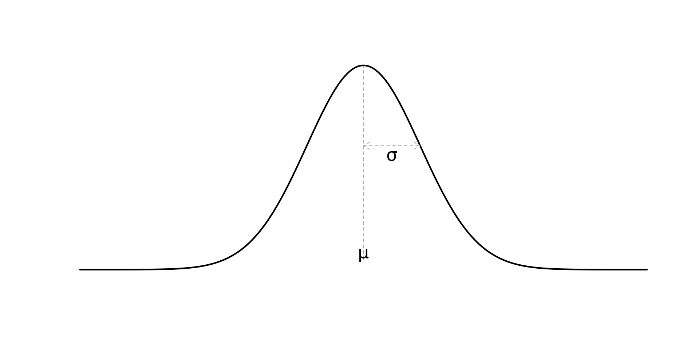
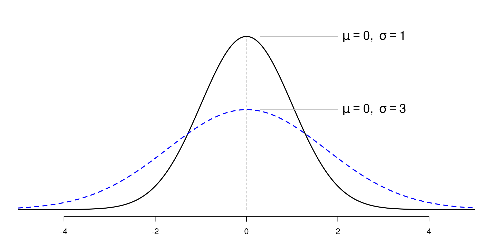
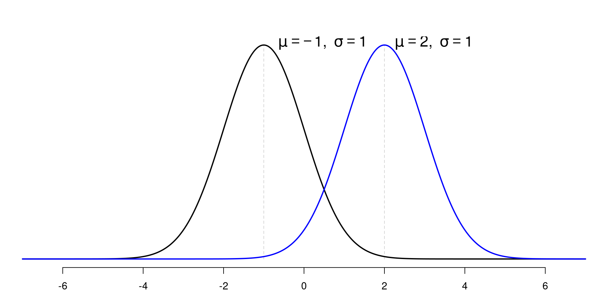
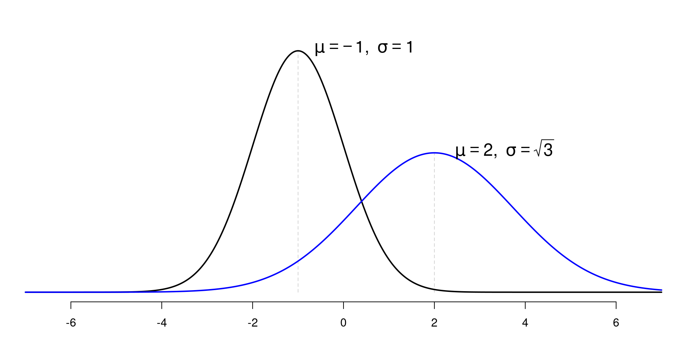
Normal Distribution
Standard Normal Distribution (PDF)
When \(\mu = 0\) and \(\sigma = 1\), the normal distribution is called the standard normal distribution
\[ \phi(z) = \frac{1}{\sqrt{2\pi}}e^{-\frac{z^2}{2}}, ~~~ -\infty < z < \infty \] CDF of the standard normal distribution: \(\Phi(z)\)
\[ \Phi(z) = \int_{-\infty}^{z} \phi(t)dt \]
Proposition
\[ Z = \frac{X - \mu}{\sigma} \sim N(0, 1) \]
Normal Distribution
68-95-99 Rule
Approximately 68% of the data falls within 1 standard deviation of the mean, 95% within 2 standard deviations, and 99.7% within 3 standard deviations.
Check
Example
Let the random experiment consist of a person taking an IQ test, and let \(X\) be the score on the test. The scores on such a test are typically standardized to have a mean of 100 and a standard deviation of 15. What is the probability \(P(85\leq X \leq 115)\)?
Other Continuous Distributions
Exponential Distribution
Motivation
How to model the time between events that occur continuously and independently at a constant average rate (waiting time)?
Examples
- Call center: time between message transmission
- Finance: time between market price change
- Manufacturing: time between machine failure
What we need?
- Capture the uncertainty and randomness of the event occurance
- Assumption of memoryless property: the probability of the event occurring in the next time interval is independent of the past
Exponential DIstribution
Definition
A random variable \(X\) has an exponential distribution and write \(X \sim \exp(\lambda)\)
\[ f_X(x) = \lambda \exp(-\lambda x),~~~~x\geq0 \] where
- \(x\): The time until the next event occurs;
- \(\lambda\): The rate at which events occur
\[ F_X(x) = 1 - \exp(-\lambda x),~~~~x\geq0 \]
\[\begin{aligned} \mu_X &=E(X) = \frac{1}{\lambda} \\ \sigma^2_X &= Var(X) = \frac{1}{\lambda^{2}} \end{aligned}\]
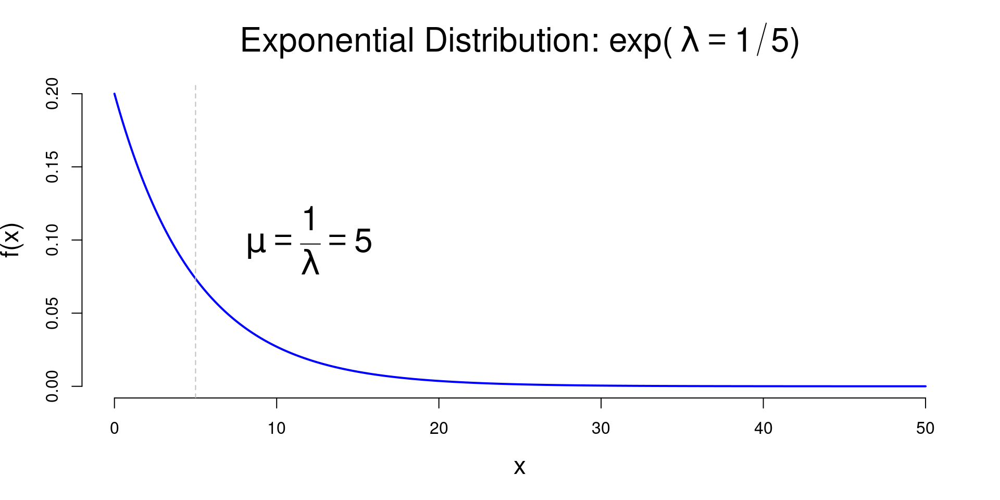
Exponential Distribution
Relationship to Poisson Distribution
Poisson process: Events occurring randomly in time or space at a constant average rate \(\lambda\).
Poisson distribution: how many events occur in a given interval.
Exponential distribution: time between consecutive events in this process.
Example
Suppose that customers arrive at a store according to a Poisson process with rate \(\lambda\).
\(Y\): a random variable representing the number of customers arriving in a given time interval \([0,t)\) \(\rightarrow\) \(Y \sim \text{Pois}(\lambda t)\)
\(X\): a random variable representing the length of time interval \(\rightarrow\) \(X \sim \exp(\lambda)\)
Gamma Distribution
Definition
A generalization of the exponential distribution. A random variable \(X\) is said to have a gamma distribution with shape parameter \(\alpha\) and inverse scale parameter (shape) \(\lambda = 1/\theta\), denoted as \(X \sim \mathrm{gamma}(\alpha, \lambda)\)
Parameterized by shape \(\alpha\) and inverse scale \(\lambda\)
\[ f_X(x; \alpha, \lambda) = \frac{\lambda^\alpha}{\Gamma(\alpha)}x^{\alpha - 1}\exp(-\lambda x),~~ x>0 \] where
- \(\Gamma(\alpha)\) is the gamma function defined as \(\Gamma(\alpha) = (\alpha - 1)!\)
Parameterized by shape \(\alpha\) and scale \(\theta\)
\[ f_X(x; \alpha, \theta) = \frac{1}{\Gamma(\alpha)\theta^\alpha}x^{\alpha - 1}\exp\left(-\frac{x}{\theta}\right),~~ x>0 \]
Parameterized by shape \(\alpha\) and inverse scale \(\lambda\)
\[\begin{aligned} \mu_X &=E(X) = \frac{\alpha}{\lambda} \\ \sigma^2_X &= Var(X) = \frac{\alpha}{\lambda^{2}} \end{aligned}\]
Parameterized by shape \(\alpha\) and scale \(\theta\)
\[\begin{aligned} \mu_X &=E(X) = \alpha \theta \\ \sigma^2_X &= Var(X) = \alpha \theta^{2} \end{aligned}\]
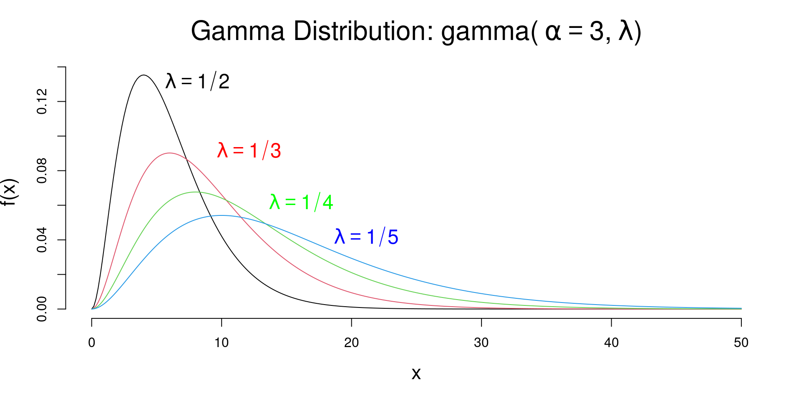
Gamma Distribution
Relationship to Exponential Distribution
If \(X\) measures the length of time until the first event occurs in a Poisson process with rate \(\lambda\), then \(X \sim \exp(\lambda)\)
Let \(Y\) be the length of time until the second event occurs, then \(Y\) can be expressed as the sum of two independent exponential random variables with parameter \(\lambda\): \(Y = X_1 + X_2\), where \(X_1, X_2 \sim \exp(\lambda)\) then \(Y \sim \mathrm{gamma}(\alpha=2, \lambda)\)
Example
Suppose that customers arrive at a store according to a Poisson process with rate \(\lambda = 1/3\). We decide to measure the length of time until the 4th customer arrives. What is the distribution of this waiting time?
Answer
\[Y \sim \mathrm{gamma}(\alpha = 4, \lambda = 1/3)\]
\(\chi^2\) Distribution
Definition
A random variable \(X\) is said to have a chi-square distribution with \(\nu\) degrees of freedom, denoted as \(X \sim \chi^2(\nu)\)
\[f_X(x; \nu) = \frac{1}{\Gamma\left(\nu/2\right)2^{\nu/2}}x^{\nu/2-1}\exp[-x/2],~~x\geq 0\]
where \(\nu > 0\) is the degrees of freedom (integer),
\[ \Gamma(\nu/2) = \int_{0}^{\infty} t^{\nu/2-1}\exp(-t) dt,~~ z>0 \]
\[\begin{aligned} \mu_X &=E(X) = \nu \\ \sigma^2_X &= Var(X) = 2\nu \end{aligned}\]
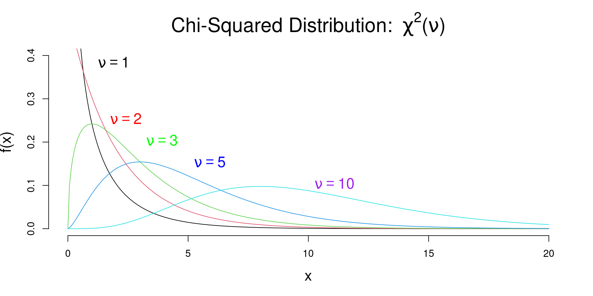
\(\chi^2\) Distribution
Properties
Specific case of the gamma distribution: If \(X \sim \chi^2(\nu)\), then \(X \sim \mathrm{gamma}(\alpha = \nu/2, \lambda = 1/2)\)
A random variable \(Z \sim N(0, 1)\), then \(X = Z^2 \sim \chi^2(1)\)
If \(Z_1, Z_2, \ldots, Z_{\nu}\) are independent standard normal random variables, then the sum of their squares follows a chi-square distribution with \(\nu\) degrees of freedom:
\[X = \sum_{i=1}^{\nu} Z_i^2 \sim \chi^2(\nu)\] 4. Additivity property: If \(X_1 \sim \chi^2(\nu_1)\) and \(X_2 \sim \chi^2(\nu_2)\) are independent chi-square random variables, then their sum follows a chi-square distribution with degrees of freedom equal to the sum of their individual degrees of freedom:
\[ X_1 + X_2 \sim \chi^2(\nu_1 + \nu_2) \]
\(\chi^2\) Distribution
Properties (Continued)
- Application:
- Chi-square distribution is widely used in hypothesis testing, particularly in tests of independence and goodness-of-fit tests.
- It is also used in hypothesis test for population variance when the underlying distribution is normal.
- \(X_1, \ldots X_n \overset{i.i.d}{\sim} N(0,1)\) and sample variance \(S^2=\sum_{i=1}^{n}(X_i - \bar{X})^2/(n-1)\), then
\[ \frac{(n-1)S^2}{\sigma^2} \sim \chi^2(n-1) \]
t Distribution
Definition
A random variable \(X\) is said to have a \(t\) distribution with \(\nu\) degrees of freedom, denoted as \(X \sim t(\nu)\)
\[f_X(x; \nu) = \frac{\Gamma\left[ (r+1)/2 \right ]}{\sqrt{\nu\pi}\Gamma(\nu/2)} \left (1 + \frac{x^2}{r} \right )^{-(\nu+1)/2}, ~~~~~ -\infty < x < \infty\]
where \(\nu > 1\) is the degrees of freedom (integer) and \(\Gamma(\cdot)\) is the gamma function.
\[\begin{aligned} \mu_X &=E(X) = 0, ~~ \nu > 1 \\ \sigma^2_X &= Var(X) = \frac{\nu}{\nu - 2}, ~~ \nu > 2 \end{aligned}\]
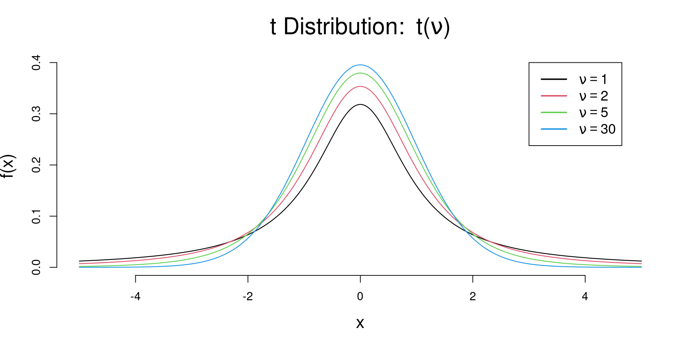
t Distribution
Properties
Symmetry around 0, tails heavier than normal distribution
As \(\nu \to \infty\), the \(t\) distribution approaches the standard normal distribution:
\[t(\nu) \to N(0, 1)\]
- Relationship to normal and chi-square distributions: If \(Z \sim N(0, 1)\) and \(V \sim \chi^2(\nu)\) are independent random variables, then the random variable
\[T = \frac{Z}{\sqrt{V/\nu}} \sim t(\nu)\]
- Application:
- The \(t\) distribution is commonly used in hypothesis testing and confidence interval estimation when the population standard deviation is unknown and the sample size is small.
- It is particularly useful in the context of the one-sample and two-sample \(t\) tests.
\[ T = \frac{\bar{X} - \mu}{S/\sqrt{n}} \sim t(n-1) \]
F Distribution
Definition
A random variable \(X\) is said to have a \(F\) distribution with \((\nu_1, \nu_2)\) degrees of freedom, denoted as \(X \sim F(\nu_1, \nu_2)\)
\[f_X(x; \nu_1, \nu_2) = \frac{\Gamma\left(\frac{\nu_1 + \nu_2}{2}\right)}{\Gamma\left(\frac{\nu_1}{2}\right)\Gamma\left(\frac{\nu_2}{2}\right)}\left(\frac{\nu_1}{\nu_2}\right)^{\nu_1/2} \frac{x^{\nu_1/2 - 1}}{\left(1 + \frac{\nu_1}{\nu_2}x\right)^{(\nu_1 + \nu_2)/2}},~~ x\geq 0\]
where \(\nu_1\) and \(\nu_2\) are the degrees of freedom (integers) and \(\Gamma(\cdot)\) is the gamma function.
\[\begin{aligned} \mu_X &=E(X) = \frac{\nu_2}{\nu_2 - 2}, ~~ \nu_2 > 2 \\ \sigma^2_X &= Var(X) = \frac{2\nu_2^2(\nu_1 + \nu_2 - 2)}{\nu_1(\nu_2 - 2)^2(\nu_2 - 4)}, ~~ \nu_2 > 4 \end{aligned}\]
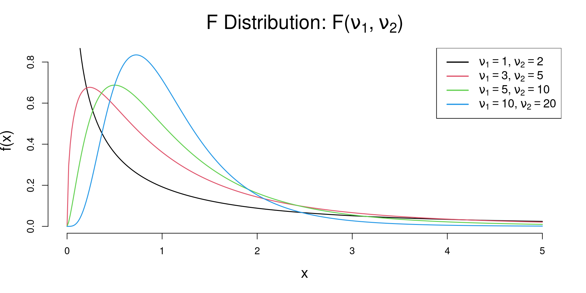
F Distribution
Properties
Non-negativity: The F-distribution is defined only for non-negative values, i.e., \(X \geq 0\).
Asymmetry: The F-distribution is right-skewed, especially for small degrees of freedom. As the degrees of freedom increase, the distribution becomes more symmetric.
\(F \sim F(\nu_1, \nu_2)\) implies that \(\frac{1}{F} \sim F(\nu_2, \nu_1)\)
\(X \sim t(\nu)\) implies that \(X^2 \sim F(1, \nu)\)
Relationship to chi-square distributions: If \(X_1 \sim \chi^2(\nu_1)\) and \(X_2 \sim \chi^2(\nu_2)\) are independent chi-square random variables, then the random variable
\[F = \frac{(X_1/\nu_1)}{(X_2/\nu_2)} \sim F(\nu_1, \nu_2)\]
F Distribution
Properties (Continued)
- Application:
- The F-distribution is commonly used in analysis of variance (ANOVA) to compare the variances of two or more groups.
- It is also used in regression analysis to test the overall significance of a regression model.
Let \(X_1\ldots X_n \overset{i.i.d}{\sim} N(\mu_1, \sigma^2_1)\), \(Y_1\ldots Y_m \overset{i.i.d}{\sim} N(\mu_2, \sigma^2_2)\), and sample variances \(S^2_X=\sum_{i=1}^{n}(X_i - \bar{X})^2/(n-1)\), \(S^2_Y=\sum_{j=1}^{m}(Y_j - \bar{Y})^2/(m-1)\), then
\[ \frac{S^2_X/\sigma^2_1}{S^2_Y/\sigma^2_2} \sim F(n-1, m-1) \]